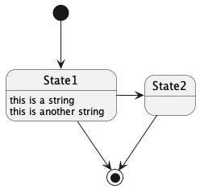
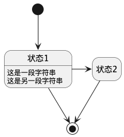
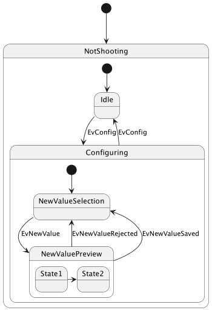

State Diagram
普通状态
[*] 作为状态图的起点或终点
使用 --> 添加箭头
@startuml [*] --> State1 State1 --> [*] State1 : this is a string State1 : this is another string State1 -> State2 State2 --> [*] @enduml

简化状态
使用 hide empty description 关键字，隐藏空描述。
@startuml hide empty description [*] --> 状态1 状态1 --> [*] 状态1 : 这是一段字符串 状态1 : 这是另一段字符串 状态1 -> 状态2 状态2 --> [*] @enduml

复杂状态
一个状态可以是嵌套的，必须使用关键字 state 和花括号来定义复杂状态。
@startuml scale 350 width [*] --> NotShooting state NotShooting { [*] --> Idle Idle --> Configuring : EvConfig Configuring --> Idle : EvConfig } state Configuring { [*] --> NewValueSelection NewValueSelection --> NewValuePreview : EvNewValue NewValuePreview --> NewValueSelection : EvNewValueRejected NewValuePreview --> NewValueSelection : EvNewValueSaved state NewValuePreview { State1 -> State2 } } @enduml
